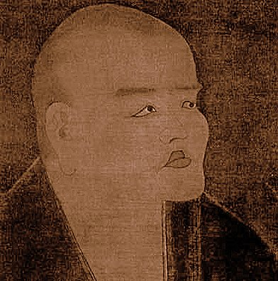

Dōgen Zenji
1200 - 1253
was a Japanese Buddhist priest, writer, poet, philosopher, and
founder of the Sōtō school of Zen in Japan.
Originally ordained as a monk in the Tendai School in Kyoto, he
was ultimately dissatisfied with its teaching and traveled to
China to seek out what he believed to be a more authentic
Buddhism. He remained there for five years, finally training under
Tiantong Rujing, an eminent teacher of the Chinese Caodong
lineage. Upon his return to Japan, he began promoting the practice
of zazen (sitting meditation) through literary works such as Fukan
zazengi and Bendōwa.

The most well-known portrait of Dōgen